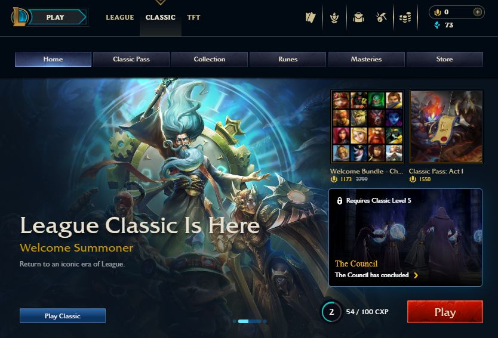
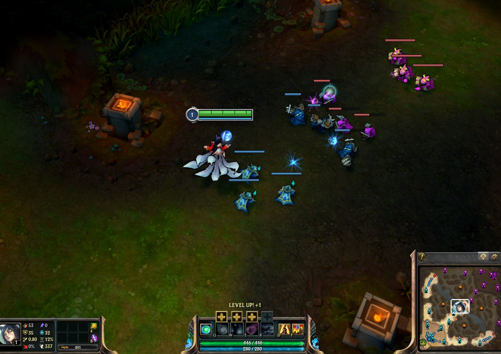

In the world of video game news, nostalgia has become a massive driving force, and Riot Games is finally tapping into it. The long-awaited League Classic patch officially launched on July 29, bringing players back to the golden era of Season 3. But stepping back onto the old green-and-brown Rift isn't just a visual downgrade — it completely changes how the game actually feels.
Slower Pacing

Modern League is fast, hyper-mobile, and full of complex systems. League Classic rips all of that out and brings it back the way it used to be. By reverting to the old 30-point Offense/Defense/Utility mastery trees, traditional Rune Pages, and legacy items, the game inherently slows down. Instead of games where you get one-shotted in half a second, matches feel more like a macro-focused game of chess. It becomes a game of vision, cooldowns are much longer and far more punishing, and mana becomes more precious. It forces a slower tactical pacing that makes every decision and misstep carry heavier consequences.
Bye Bye, 200 Years

It could be argued that the most refreshing part of the mode is the League Classic champions list. Dialing the roster back strips away champion kits from the "200 years of collective design experience." There are no champions with infinite dash resets or essay-length ability descriptions to memorize. Instead, it feels beautifully raw and unrefined. You get to experience the ridiculousness of AP Master Yi and the uselessness of Sion's RNG passive.
Should You Play It?
If you've missed older mechanics and the iconic aesthetic of early Summoner's Rift, this patch is built specifically for you. It is without a doubt clunkier, but that is kind of where its charm lies. Even if you are a new player who knows nothing about the older seasons, it is still worth trying out for a fresh way to experience League of Legends. It isn't trying to replace the current game — it's a playable time capsule that shows us how far the game we love has come. You can read more about the current game on the official League of Legends site.